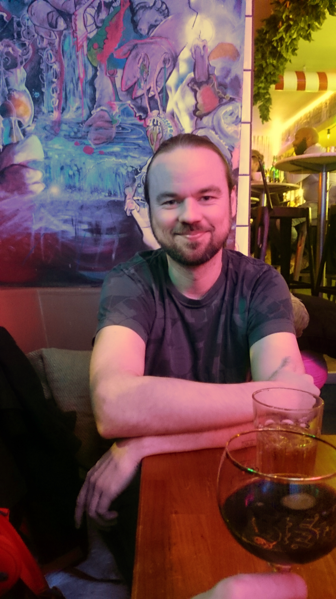
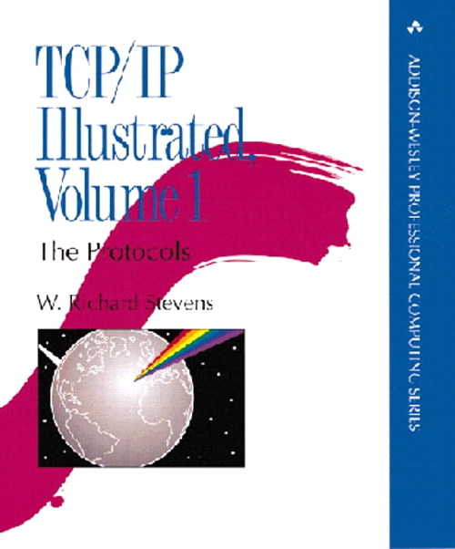
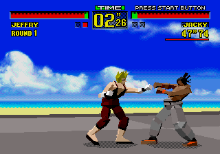
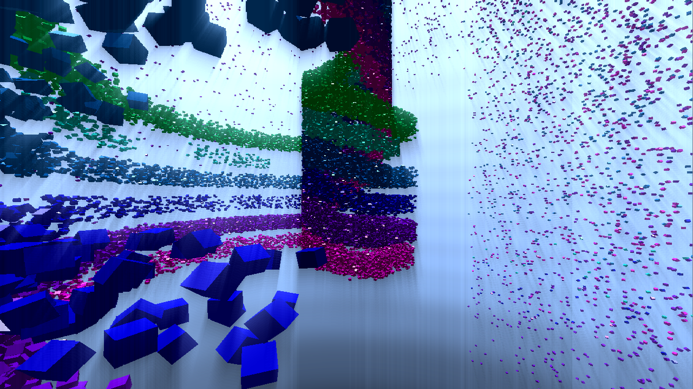
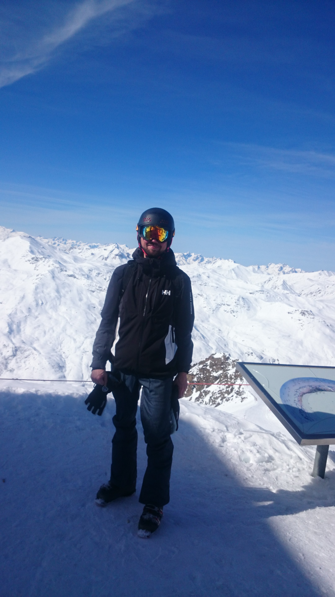

Interview Företagsplatsen: Mikael Hägerbro
Interview with Mikael Hägerbro
This is the fifth post of my series of interviews of my colleagues at FTGP.
While writing this introduction, I realized that I have been working with Mikael for the past 6 years! Time really flies.
Mikael is the hacker kind of computer guy: he has a deep interest in computer security, networking, and he's obviously passionate about everything related to computers.
During the last years, we've spent a lot of time working together, but also shared countless beers, and I'm really happy to count him as a friend.

Figure 1: Mikael hanging out at a kaffebar
Hi Mikael, thanks for taking this interview. First things first, could you tell me a bit about yourself?
Sure, my name is Mikael Hägerbro, I'm 36 years old at the time of writing this and I'm one of the founders of Företagsplatsen.
I was born in a small town in the northern part of Sweden called Vilhelmina and went to study computer science at Umeå University. Computers have always been an interest of mine, so it was the natural choice for me.
For what can be better than working with one of your biggest interests? During my studies I met Henrik and became friends with him. When the time came for me to choose the topic of my master thesis Henrik asked me if I was interested to make it about this cool web application that he and his friends in Stockholm wanted to develop. He also hooked me up on some consultant work besides the studies and I guess that was the start of it all.
Question #2: Can you tell us how you became a developer?
I have an older brother to thank for that, for it all started out with some very small steps on his C64 in the late 80’s. My goal was to be able to make my own fighting games (I have always been interested in martial arts) but at that age it was way more fun to play the games than to read complicated books about programming.

Figure 2: tcp ip illustrated - The networking bible
A couple of years passed and then one day I saw the arcade game Virtua Fighter by Sega and that totally blew my mind and it set me on the quest of doing 3d graphics.

Figure 3: Sega Virtua Fighter - Was so awesome back in the days
It was not long after that I got the opportunity to explore the Internet and that was the start of my interest in networks and security. I remember reading about Kevin Mitnick and ip-spoofing which made me very curious. How does it work? Why does it work? And can I do something similar?
Question #3: What is your role in the company?
Since I have been working with this from the start I have good knowledge about more or less every aspect of our product, so it comes quite naturally that I do a bit of everything. That is why I don't consider myself to have a special role in the company.
Question #4: What does a typical day at work look like?
A typical day for me starts out with a cup of coffee and catching up on what had happened on the issue tracker, mailing lists, github, etc. and I prepare myself for our daily meeting.
During the meeting we set the roadmap for the day and discuss what to do and after that it is coding time!
Question #5: What do you do on your free time? (both in front of and away from your computer)?
When it comes to computers I try to do different stuff in my spare time just to get some variation, so at home I use to do some graphic programming and play around a bit with security (mostly reverse engineering and writing exploits for wargames).

Figure 4: A 4k intro I made. Graphic programming under constraints is fun
Other than that I like the usual stuff, to spend time with my friends, traveling, go to new restaurants and I also do some thai boxing just to try to stay in shape.

Figure 5: Val Thorens - Skiing is also one of my interests
Question #6: What is your favorite movie of the year?
I guess that would be Citizenfour.
Question #7: If you were doing an interview of one of your colleagues, what question would you ask him?
Why is Företagsplatsen such an awesome place to work at?
Question #8: In her interview, Louise had a question for the next interview:
What do you think that your personality can provide to Företagsplatsen, as a co-worker, that no one else at this company can?
I have my own point of view that has been formed by my experiences and knowledge that provides a unique asset in our work environment :-)
Thank you Mikael!
comments powered by Disqus